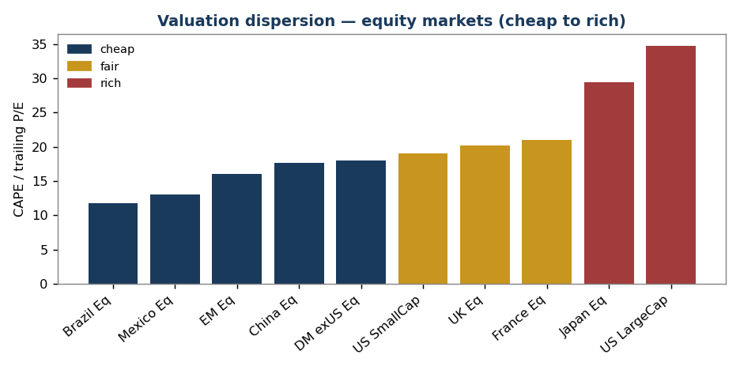
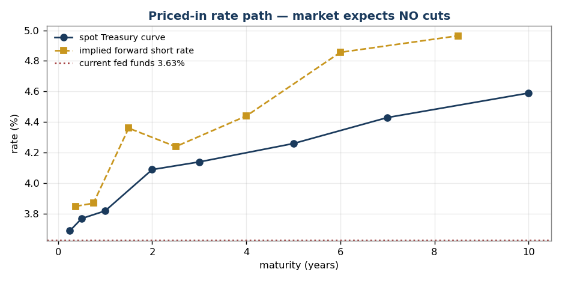
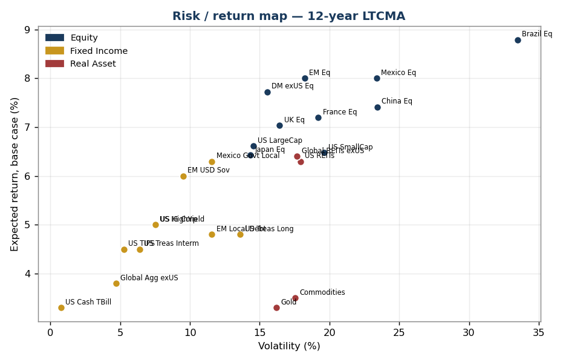
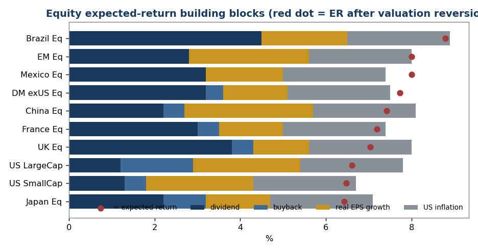
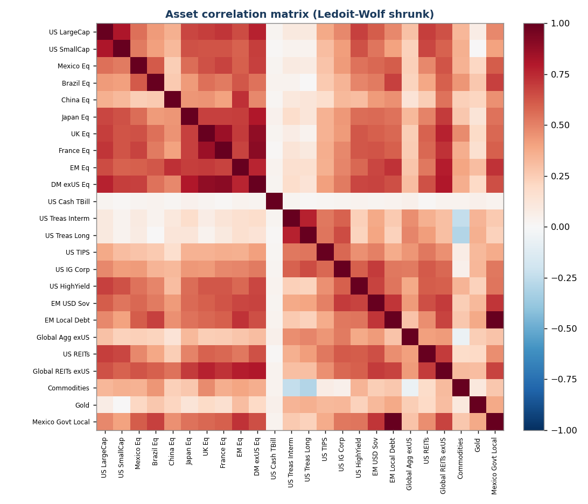
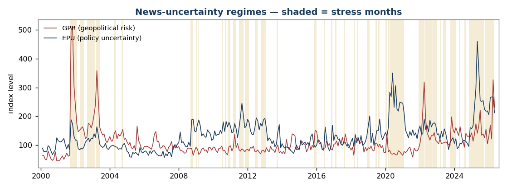
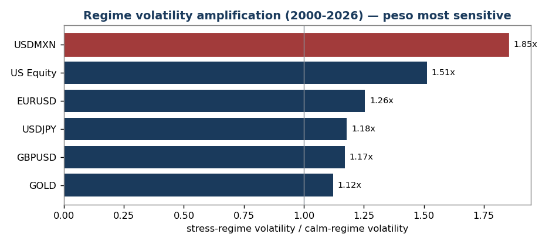
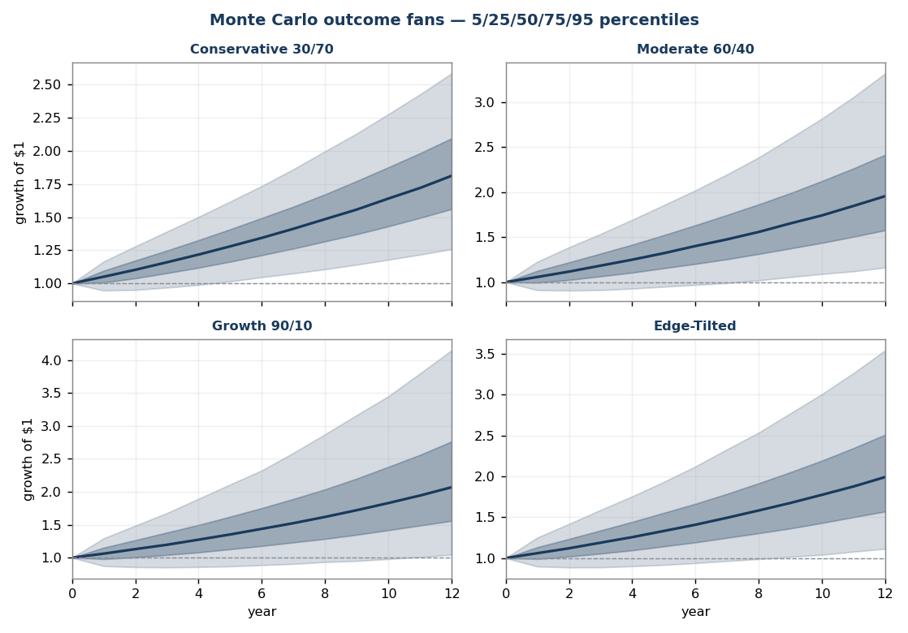

Long-Term Capital Market Assumptions — 2026 Edition
A proprietary 12-year forward outlook for global asset classes
- Model as-of date: 11 August 2026 (equity valuation input: 30 June 2026)
- Base currency: USD
- Horizon: 12 years (midpoint of a 10–15-year window)
- Universe: 24 asset classes spanning global equities, fixed income, and real assets
- Engine: building-block returns + Ledoit-Wolf shrinkage + regime-switching GPU Monte Carlo
- Data: free public sources — Yahoo Finance, FRED, Damodaran (1928+), Shiller (1871+), Ken French (1990+), Siblis Research, the GPR and EPU uncertainty indices, central banks
This document is the strategic layer (Step 1) of a three-step allocation process: (1) LTCMA 10–15-year assumptions → (2) normalize to a 3–5-year cycle-aware forecast → (3) overlay current macro indicators. Reviewed annually.
Reading this report. Every technical term — CAPE, volatility, Monte Carlo, regime-switching, and the rest — is explained in plain language in the Glossary. All figures are in USD unless noted otherwise.
1. Executive Summary
After a long US-led bull market, the starting point for the next decade is one of extreme valuation dispersion. The US trades at a CAPE of ~40 and Japan ~29, while Mexico, Brazil, and China trade at 12–18× earnings. That gap drives four strategic conclusions:
-
US large-cap equity has the lowest expected return of any equity market in the universe (~6.0% base case) — and the highest sensitivity to the valuation assumption. A 3.6-percentage-point swing separates the optimistic and pessimistic scenarios. Owning US equity at today's multiple is, mathematically, a bet that rich valuations persist.
-
Emerging and Latin American equity offer the highest expected returns (~8.0–8.8%) and the smallest valuation bet — their return is carried by income and growth, not multiple expansion.
-
The richest fixed-income edge is in EM local and USD sovereign debt. Mexican local government bonds offer ~6.3% in USD at one of the best downside profiles in the universe; EM USD sovereigns ~6.0%. Both beat US investment-grade and high-yield credit, which sit at multi-year-tight spreads.
-
Bonds still diversify, but less reliably than the pre-2021 era. The trailing stock/long-Treasury correlation is ~0.00. Gold (0.11 vs US equity) and the Treasury/commodity pairing (−0.38) now do more genuine diversification work than nominal bonds alone.
Two cross-checks against the live market sharpen the picture:
- What's priced in (Section 4): the Treasury curve says the market expects no further rate cuts — short-rate forwards rise, not fall. Inflation expectations (~2.3%) sit right on the LTCMA assumption. Credit is priced for perfection. The LTCMA's active bets are exactly where it diverges from this.
- News and regime risk (Section 7): geopolitical and policy uncertainty (GPR, EPU indices) are elevated, and the market is currently in a "stress" regime. Quantified, that history shows stress periods amplify volatility (1.1–2.1×) and cross-correlations (0.67→0.73) — but, tellingly, did not reliably depress returns over 2013–2026.
Headline expected returns (USD, 12-year, base case):
| Point estimate | Simulated 12y median | Volatility | |
|---|---|---|---|
| US large-cap equity | 6.0% | 5.2% | 13.4% |
| EM equity | 8.0% | 6.4% | 18.7% |
| Brazil / Mexico equity | 8.8% / 8.0% | 4.6% / 5.8% | 31.2% / 21.9% |
| US Treasury / IG credit | 4.5% – 5.0% | 4.2% – 4.7% | 7.5% – 7.9% |
| EM USD sovereign / Mexican local govt | 6.0% / 6.3% | 5.6% / 5.3% | 9.7% / 14.7% |
| Cash (US T-bills) | 3.3% | 3.2% | 3.4% |
Simulated medians come from the regime-switching GPU Monte Carlo (scripts
07/11). As of 11 August 2026 that stage is re-run on the same schedule as
the building-block returns, so the medians above reflect the same 30 June 2026
CAPE input as the point estimates — the two layers are no longer of different
vintages. The US large-cap simulated median fell 5.7% → 5.2% when the simulation
was rebuilt on the refreshed means.
(Simulated medians sit below point estimates by design — the volatility drag on compounded returns. See Section 7.)
2. Methodology
2.1 Building-block framework
Every serious capital-market-assumptions publisher — J.P. Morgan, BlackRock, Vanguard, Northern Trust, GMO, Research Affiliates, AQR — uses the same building-block skeleton. Expected return is decomposed into observable, defensible components rather than extrapolated from past performance.
Equities (return expressed directly in USD):
ER = dividend yield + net buyback yield + real EPS growth
+ US inflation + λ × valuation reversion
The relative-PPP assumption lets us anchor on US inflation: a foreign market's local inflation is, over a long horizon, broadly offset by depreciation of its currency against the dollar.
Fixed income: ER = starting yield + roll − expected credit loss ± normalization,
where expected credit loss = default rate × (1 − recovery rate).
Currencies: purchasing-power parity + real-interest-rate differential.
2.2 The valuation-reversion dial (λ) — a multi-firm synthesis
Firms agree on the skeleton; they disagree on how hard valuations mean-revert. This model exposes that choice as one parameter, λ:
| λ | Meaning | Closest to the house view of |
|---|---|---|
| 0.0 | No reversion — today's multiples persist | Momentum / regime views (Bridgewater-style) |
| 0.5 | Partial normalization (base case) | J.P. Morgan, BlackRock, Vanguard, Northern Trust |
| 1.0 | Full reversion to fair value | GMO, Research Affiliates, AQR |
Annualized reversion is (fair multiple / current multiple)^(1/H) − 1. The
spread across λ is itself a signal — the "valuation bet" column.
The fair-value anchor is data-driven. Shiller's 150-year series puts the US CAPE at a 1990+ median of 26.0 — exactly the anchor used here.
The current multiple is sourced, not hardcoded. The US val_now reads the
latest calendar quarter-end from the Shiller ie_data series (30 June 2026:
CAPE 40.49), pinned to a quarter-end because Shiller's final months carry an
estimated CPI. Before August 2026 this was a hardcoded constant that went two
quarters stale without any signal — the refresh path is now automated end to end.
Open methodology question — one lens or two? This model is CAPE-anchored, and the two standard valuation lenses disagreed over H1 2026: CAPE rose (its ten-year real-earnings denominator lags a current earnings surge) while the US forward P/E fell as earnings outran price. A CAPE-only reading therefore increases the valuation drag in a period when a forward-earnings reading would have reduced it. The August 2026 refresh deliberately kept the single-lens CAPE method unchanged — it was a data refresh, not a methodology change — but whether a 12-year model should be CAPE-anchored, forward-P/E-anchored, or a blend of the two remains an open decision, not a settled one.
2.3 Risk model — shrinkage and long history
Volatility blends a trailing-window estimate with multi-decade history (Shiller 1871+, Ken French 1990+, Damodaran 1928+), plus 25 years of intraday FX history (FxPro M5 data aggregated to monthly — EURUSD/USDJPY since 2000, USDMXN since 2007). The covariance matrix uses Ledoit-Wolf shrinkage — well-conditioned and positive semi-definite, a requirement for the simulation engine.
2.4 Priced-in indicators
Markets continuously quote their own expectations. Section 4 extracts them — the rate path implied by Treasury forwards, inflation from breakevens, risk from VIX and credit spreads — and contrasts each with the LTCMA. Where they diverge, the LTCMA is making an explicit, identifiable active bet.
2.5 Quantifying news and market regimes
Discretionary news — a tariff tweet, a Fed-chair change, a strike on Iran — cannot be turned into a defensible number tweet-by-tweet. The rigorous approach, and the one used here, is established text-based uncertainty indices:
- GPR — Geopolitical Risk index (Caldara-Iacoviello), built from newspaper text; spikes on wars and military escalation.
- EPU — Economic Policy Uncertainty (Baker-Bloom-Davis); spikes on Fed-chair uncertainty, tariff conflict, fiscal standoffs.
These quantify the aggregate of the news flow. They are used to classify history into calm and stress regimes (Section 7), which then drive the simulation — so "the news" enters the model as regime probabilities and regime-specific risk, not as ad-hoc adjustments.
2.6 Regime-switching Monte Carlo engine
A GPU Monte Carlo engine simulates 100,000 monthly multi-asset paths over the 12-year horizon. It is two-regime Markov-switching (calm/stress, calibrated from the news indices) with Student-t innovations (fat tails), and it starts in the stress regime to reflect today's elevated-uncertainty reading. It runs on an NVIDIA RTX 4060 in ~15 seconds and produces full return distributions — percentiles, probability of loss, and conditional tail loss (CVaR) — for every asset and portfolio.
2.7 Consensus and historical cross-checks
- Forward consensus: 2026 published LTCMAs put US large-cap equity at 5–7.6% and US aggregate bonds at 4.1–4.8%. This model's base case sits inside both.
- Historical realized (Damodaran, 1928–2025): US large-cap returned 10.0% annualized, 10-year Treasuries 4.5%, T-bills 3.4%. The forward US equity number is deliberately below its history — the starting CAPE (40) is far above the historical norm.
3. Macro Backdrop & Fundamentals Grid
| Market | Policy rate | 10Y nominal | 10Y real* | Inflation | Trend real GDP | Equity valuation | Damodaran ERP |
|---|---|---|---|---|---|---|---|
| US | ~3.6% | 4.72% | ~2.0% | ~2.7% | ~1.9% | CAPE 40.5 — rich | 4.46% |
| Mexico | 6.50%† | 9.45% | ~5.0% | 4.45% | ~2.0% | P/E 13.0 — cheap | 6.69% |
| Brazil | 14.50%† | ~13.5% | ~9.0% | ~4.5% | ~2.0% | P/E 11.8 — cheap | 7.47% |
| China | ~3.0% (LPR)† | ~1.8% | ~1.3% | ~0.5% | ~4.0% | CAPE 17.7 — cheap | 5.14% |
| Japan | ~0.75%† | 2.67% | ~0.2% | ~2.5% | ~0.7% | CAPE 29.4 — rich | 5.14% |
| UK | ~3.9%† | 4.80% | ~1.8% | ~3.0% | ~1.3% | CAPE 20.2 — fair | 5.01% |
| France | ~2.0% (ECB)† | 3.68% | ~1.9% | ~1.8% | ~1.2% | CAPE ~21 — fair | 5.01% |
Real yield = 10Y nominal − current inflation (approximate).
Nominal 10Y yields are the latest observation in data/macro.csv as of
11 August 2026 (US daily; Mexico, Japan, UK and France are monthly FRED series
and lag by one to three months). Equity valuations are the model's val_now.
†Policy rates other than the US are hand-maintained from central-bank sources —
they are not* reproduced by any script in this repo, and the Mexico_PolicyRate
column in macro.csv has been dead since 2013. Treat them as documented inputs,
not as regenerated data.
What the grid says: valuation is bimodal — the US and Japan are expensive, EM/LatAm and China are cheap, with only the UK and France in between. Real yields favor Latin America massively (Mexico ~5.0%, Brazil ~9%, vs US ~2.0%). Rate direction is no longer a tailwind anywhere — carry, not duration, is where the return is. China is the contrarian case: cheap and still growing ~4%, but deflation and policy risk are what the discount prices.

4. Priced-In Indicators
A capital-market assumption is only active where it disagrees with what the market already expects. This section extracts the market's own forecasts.
4.1 Priced-in policy-rate path — the headline
The Treasury curve, read as implied forward rates, reveals the market's expected path of short rates:
| Period | Implied avg short rate |
|---|---|
| Current fed funds (effective) | 3.63% |
| Next 12 months (1Y Treasury) | 3.82% |
| 1–2 years forward | 4.36% |
| 2–3 years forward | 4.24% |
| 3–5 years forward | 4.44% |
| 5–10 years forward | ~4.9% |
The market is pricing zero further rate cuts. Forward short rates rise, not fall — the curve says the Fed's easing cycle is over and the next move is as likely up as down. This matters: despite a steady "central banks are easing" narrative, anyone positioning for a rate-cut tailwind is fighting the curve. The LTCMA's cash assumption (3.3%, assuming a drift toward a ~3.0–3.3% neutral rate) is slightly below what the market prices — a small, deliberate divergence.

4.2 Priced-in inflation, risk, and the dashboard
Market readings below are the 11 August 2026 observation (EPU is the July
monthly print). They are a dated snapshot of data/priced_in.csv, which script
09_priced_in.py regenerates every weekday — the live version of this table is
the dashboard on index.html, which is always current.
| Signal | What the market prices | LTCMA assumption | Read |
|---|---|---|---|
| Rate path | No cuts; ~4.0% avg next 12m, 1–2y forward 4.5% | Cash 3.3% | Market more hawkish than the LTCMA's neutral-rate drift |
| Long-run inflation | 10y breakeven 2.27%, 5y5y forward 2.31% | 2.40% | Aligned — LTCMA sits mid-range |
| US credit risk | HY OAS 2.70% (~8th percentile — very tight) | HY 5.0%, tight-spread drag applied | Agreement — credit priced for perfection; LTCMA already cautious |
| Equity volatility | VIX 15.5 (~35th percentile) | Equity vols 13–33% | Market calm; no near-term stress priced |
| Recession | Yield curve 10Y–3M +0.81% (positive) | n/a | No recession priced in |
| Policy uncertainty | EPU 184 (baseline ~100 — elevated) | n/a | Complacency divergence — see below |
The complacency divergence. Policy uncertainty (EPU) is elevated at ~184 while equity volatility (VIX) sits below its historical median. The market is treating heavy policy noise — a Fed-chair transition, tariff conflict, the Gulf situation — as signal-free. Either the noise resolves benignly (the 2013–2026 pattern) or this gap closes through a volatility spike. The regime engine in Section 7 is built precisely to price that asymmetry.
5. Expected Returns
5.1 Full table (USD, 12-year)
| Asset class | Type | ER λ=0 | ER base (λ=0.5) | ER λ=1 | Volatility |
|---|---|---|---|---|---|
| US Large Cap | Equity | 7.8% | 6.0% | 4.2% | 13.4% |
| US Small Cap | Equity | 6.7% | 6.5% | 6.3% | 19.3% |
| Mexico Equity | Equity | 7.4% | 8.0% | 8.6% | 21.9% |
| Brazil Equity | Equity | 8.9% | 8.8% | 8.7% | 31.2% |
| China Equity | Equity | 8.1% | 7.4% | 6.7% | 22.8% |
| Japan Equity | Equity | 7.1% | 6.4% | 5.8% | 16.5% |
| UK Equity | Equity | 8.0% | 7.0% | 6.1% | 16.1% |
| France Equity | Equity | 7.4% | 7.2% | 7.0% | 17.3% |
| EM Equity (broad) | Equity | 8.0% | 8.0% | 8.0% | 18.7% |
| DM ex-US Equity (broad) | Equity | 7.5% | 7.7% | 8.0% | 15.4% |
| US Cash / T-Bills | Fixed Income | — | 3.3% | — | 3.4% |
| US Treasury Intermediate | Fixed Income | — | 4.5% | — | 7.5% |
| US Treasury Long | Fixed Income | — | 4.8% | — | 15.1% |
| US TIPS | Fixed Income | — | 4.5% | — | 6.0% |
| US IG Corporate | Fixed Income | — | 5.0% | — | 7.9% |
| US High Yield | Fixed Income | — | 5.0% | — | 7.7% |
| EM USD Sovereign | Fixed Income | — | 6.0% | — | 9.7% |
| EM Local Debt | Fixed Income | — | 4.8% | — | 10.9% |
| Mexico Govt (local, Mbonos) | Fixed Income | — | 6.3% | — | 14.7% |
| Global Aggregate ex-US (hedged) | Fixed Income | — | 3.8% | — | 5.4% |
| US REITs | Real Asset | — | 6.3% | — | 16.9% |
| Global REITs ex-US | Real Asset | — | 6.4% | — | 15.5% |
| Commodities (broad) | Real Asset | — | 3.5% | — | 17.0% |
| Gold | Real Asset | — | 3.3% | — | 18.7% |

5.2 Equity building-block decomposition (base case, λ=0.5)
| Market | Dividend | Buyback | Real EPS growth | US inflation | Valuation reversion | = ER |
|---|---|---|---|---|---|---|
| US Large Cap | 1.2% | 1.7% | 2.5% | 2.4% | −1.8% | 6.0% |
| US Small Cap | 1.3% | 0.5% | 2.5% | 2.4% | −0.2% | 6.5% |
| Mexico | 3.2% | 0.0% | 1.8% | 2.4% | +0.6% | 8.0% |
| Brazil | 4.5% | 0.0% | 2.0% | 2.4% | −0.1% | 8.8% |
| China | 2.2% | 0.5% | 3.0% | 2.4% | −0.7% | 7.4% |
| Japan | 2.2% | 1.0% | 1.5% | 2.4% | −0.7% | 6.4% |
| UK | 3.8% | 0.5% | 1.3% | 2.4% | −1.0% | 7.0% |
| France | 3.0% | 0.5% | 1.5% | 2.4% | −0.2% | 7.2% |
| EM (broad) | 2.8% | 0.0% | 2.8% | 2.4% | 0.0% | 8.0% |
| DM ex-US (broad) | 3.2% | 0.4% | 1.5% | 2.4% | +0.2% | 7.7% |
US equity's return is built on growth and buybacks fighting a valuation headwind; EM/LatAm's return is built on income — a more reliable foundation.

6. Risk — Volatility & Correlation
Volatility blends a trailing window with multi-decade history; the covariance matrix is Ledoit-Wolf shrunk and positive semi-definite.
6.1 Selected correlation matrix (full-sample)
| US LC | EM Eq | Mexico | Japan | DM exUS | US Treas Long | US HY | EM USD Sov | Gold | Commod | |
|---|---|---|---|---|---|---|---|---|---|---|
| US Large Cap | 1.00 | 0.70 | 0.61 | 0.71 | 0.84 | −0.01 | 0.79 | 0.66 | 0.11 | 0.39 |
| EM Equity | 0.70 | 1.00 | 0.66 | 0.69 | 0.83 | −0.01 | 0.68 | 0.72 | 0.35 | 0.46 |
| Mexico Equity | 0.61 | 0.66 | 1.00 | 0.57 | 0.74 | −0.06 | 0.64 | 0.64 | 0.26 | 0.43 |
| Japan Equity | 0.71 | 0.69 | 0.57 | 1.00 | 0.84 | 0.02 | 0.61 | 0.58 | 0.10 | 0.26 |
| US Treasury Long | −0.01 | −0.01 | −0.06 | 0.02 | −0.02 | 1.00 | 0.10 | 0.35 | 0.24 | −0.38 |
| US High Yield | 0.79 | 0.68 | 0.64 | 0.61 | 0.79 | 0.10 | 1.00 | 0.81 | 0.23 | 0.43 |
| Gold | 0.11 | 0.35 | 0.26 | 0.10 | 0.24 | 0.24 | 0.23 | 0.35 | 1.00 | 0.23 |
| Commodities | 0.39 | 0.46 | 0.43 | 0.26 | 0.45 | −0.38 | 0.43 | 0.30 | 0.23 | 1.00 |
6.2 What the risk picture tells us
- Equities are highly correlated (0.57–0.84). Geographic diversification reduces single-country risk but little systemic drawdown risk.
- Long Treasuries are the cleanest equity diversifier on paper (≈0.00) — but regime-dependent (Section 7); the average hides post-2021 positive-correlation episodes.
- Gold is a genuine diversifier (0.11 vs US equity) and earns its place despite a modest 3.3% return.
- High yield is equity in disguise (0.79 correlation with US equity).
- The Treasury/commodity pair (−0.38) is the strongest natural hedge.

7. News, Regimes & Monte Carlo Simulation
7.1 Quantifying the news
Geopolitical and policy events enter the model through two text-based indices (see 2.5): GPR (geopolitical risk) and EPU (economic policy uncertainty). Both remain elevated against a ~100 baseline — GPR ~153 and EPU ~184 at the July 2026 monthly print, down from the March 2026 spike (GPR 330) but still well above normal, reflecting the Gulf situation, tariff conflict, and the Fed-chair transition.
History (2013–2026) is classified into calm and stress regimes — a stress month being one in the top third of a combined GPR+EPU score. 34% of months were stress months; at the latest classified month (July 2026) the market is in a stress regime — and has been continuously since November 2024, a 21-month spell against an average spell length of ~5 months.

7.2 What stress regimes do — and don't do
| Behavior in stress months | Finding |
|---|---|
| Volatility | Amplifies 1.1–2.1× (US equity 1.6×, high yield 2.0×, EM sovereign 2.1×; gold among the least affected at 1.3×) |
| Correlation | Equity cross-correlation rises 0.67 → 0.73 — diversification weakens just when it is needed |
| Persistence | Stress regimes last ~5.2 months on average (Markov: stress→stress 0.81) |
| Returns | No reliable drawdown. Over 2013–2026, news-stress months did not systematically post lower returns — markets repeatedly "climbed the wall of worry" |
This last point is the honest, important finding. Elevated geopolitical and policy uncertainty is reliably a volatility event, not reliably a return event. Accordingly the simulation amplifies risk (volatility, correlation, fat tails) in the stress regime but does not impose a speculative mean drawdown — that would overfit a benign 13-year sample. Severe downside is instead captured two honest ways: through fat tails and regime clustering in the simulation, and through an explicit deterministic scenario (7.5).

7.3 The simulation engine
100,000 paths, monthly steps over 12 years, two-regime Markov-switching with Student-t fat tails, starting in the stress regime. The engine ran on the RTX 4060 in 3.4 seconds.
7.4 Simulated 12-year outcomes — portfolios
| Portfolio | 5th pct | Median | 95th pct | Mean | CVaR (worst-5% avg) | P(loss) | P(< inflation) |
|---|---|---|---|---|---|---|---|
| Conservative 30/70 | 1.7% | 4.9% | 8.3% | 5.0% | +0.9% | 1% | 10% |
| Moderate 60/40 | 1.0% | 5.5% | 10.3% | 5.6% | −0.2% | 2% | 13% |
| Growth 90/10 | 0.0% | 6.0% | 12.3% | 6.0% | −1.5% | 5% | 17% |
| Edge-Tilted (moderate risk) | 0.6% | 5.7% | 11.1% | 5.8% | −0.7% | 3% | 15% |
CVaR is the average annualized return in the worst 5% of paths — the genuine tail. The gap between the 5th percentile and CVaR is the fat tail at work: a Growth portfolio's 5th-percentile path merely breaks even (0.0%/yr), but the average of everything at or below it compounds at −1.5% per year — the damage is concentrated well beyond the percentile most risk reports stop at. Conservative, by contrast, still eked out a small positive return (+0.9%/yr) across its worst 5%.

Asset-level distributions (data/mc_regime_assets.csv) confirm the earlier
ranking: EM USD sovereigns (5.6% median, 2.3% chance of a 12-year loss) and
Mexican local government bonds (5.3% median, 9.7% loss probability) remain the
standout risk-adjusted holdings; gold and commodities have a >50% chance of
failing to beat inflation and belong in a portfolio for correlation, not return.
7.5 Deterministic geopolitical-stress scenario
Separately from the simulation, a severe one-year geopolitical shock — 2008/2020-magnitude: global equities −28% to −42%, high yield −14%, EM sovereign −16%, gold +15%, long Treasuries +12% — produces:
| Portfolio | 1-year impact |
|---|---|
| Conservative 30/70 | −8.8% |
| Moderate 60/40 | −18.0% |
| Growth 90/10 | −27.2% |
| Edge-Tilted (moderate risk) | −20.2% |
Note the Edge-Tilted portfolio loses more than the conventional Moderate 60/40 in this scenario (−20.2% vs −18.0%) — its EM and Latin American tilt sells off harder in a global risk-off. That is the honest cost of the strategic edge: higher expected return and higher geopolitical-tail risk. It should be sized as a deliberate, risk-budgeted decision.
7.6 Long-history validation (25 years of FX & equity data)
The regime model is calibrated on 2013–2026 ETF data — a window with no global financial crisis. To test whether that biases the result, the calibration was re-run on a longer, cleaner dataset: Shiller US equity since 2000 and 25 years of FxPro intraday FX history (EURUSD/USDJPY from 2000, USDMXN from 2007), which do include the 2008 GFC, the 2000–02 dot-com bust, and 2020.
| Test | 2013–26 window | 2000–26 (incl. crises) | Verdict |
|---|---|---|---|
| Equity stress/calm vol multiple | 1.61× | 1.51× | Stable — model not biased by the benign window |
| MXN depreciation vs USD | 2.5% assumed | 2.43% realized | Assumption confirmed |
| Worst equity month | — | Oct 2008 −20%, Mar 2020 −19%, Sep 2001 −11% (GPR spiked to 499) | Regime classifier catches real crises |
Two things came out of this. First, the model survives the robustness check — the regime amplification is a stable ~1.5–1.6× whether or not the GFC is in the sample, and the Mexican-peso depreciation assumption is confirmed almost exactly by 18 years of data. Second, a new finding: the Mexican peso is the most regime-sensitive asset in the book — USDMXN volatility amplifies 1.85× in stress regimes, more than equities (1.5×) or developed-market FX (1.2×). The peso-heavy Edge-Tilted portfolio therefore concentrates stress risk in the currency; that is a deliberate, identified exposure, not a hidden one.
Data-quality note: the FxPro index-CFD series (#USNDAQ100 etc.) were found to have spurious year-boundary jumps in early years and were excluded; only the clean continuous FX-pair data and Shiller's equity series were used.
8. Strategic-Edge Scan
8.1 Highest expected return (base case)
Brazil 8.8% · Mexico & EM 8.0% · DM ex-US 7.7% · China 7.4% · UK 7.0%
8.2 Best risk-adjusted (return per unit of volatility)
DM ex-US equity 0.28 · EM USD sovereign 0.27 · Mexican local govt bonds 0.27 · EM equity 0.25 · US Large Cap 0.24
8.3 Smallest "valuation bet"
EM equity (0.0pp), Brazil (0.2pp), US Small Cap & France (0.4–0.5pp) barely move with λ. US Large Cap (2.4pp) and UK (1.9pp) carry the largest valuation risk.
8.4 The five edges this LTCMA identifies
-
Sell expensive US beta, buy cheap ex-US beta. US large-cap has the lowest equity return and the highest valuation risk; DM ex-US and EM offer more return with less valuation risk. Highest-conviction edge.
-
Mexican local government bonds are the standout fixed-income holding. ~6.3% USD return, and the simulation confirms the best downside profile in the fixed-income sleeve (5.3% median, 9.7% probability of a 12-year loss). The ~5.0% real yield is a thick cushion against MXN depreciation.
-
EM USD sovereign debt over US credit. 6.0% vs 5.0%, similar volatility, the best inflation-beating odds in the book, and it avoids the tight-spread compression risk in US IG and HY.
-
Use gold and commodities for diversification, not return. With the stock/bond correlation no longer dependably negative, and gold among the least volatility-amplified risk assets in stress regimes (1.3×, against 1.6× for US large-cap), it is a structural hedge — but the simulation is blunt that it rarely beats inflation, so size it as one.
-
Don't fight the curve on rates. The market prices no cuts; positioning long duration for an easing tailwind is a bet against what is priced in. Carry — EM and Mexican local rates — is the better-paid risk.
Contrarian watch-item: China is cheap with decent growth, but deflation and policy risk are real. A diversified EM allocation, not a standalone overweight.
9. Sample Portfolios
Three conventional risk-ladder portfolios plus an Edge-Tilted variant, each run through the regime-switching engine (annually rebalanced).
| Portfolio | Mean | Median | 5th–95th range | CVaR | Geopolitical scenario | P(< inflation) |
|---|---|---|---|---|---|---|
| Conservative 30/70 | 5.0% | 4.9% | 1.7% – 8.3% | +0.9% | −8.8% | 10% |
| Moderate 60/40 | 5.6% | 5.5% | 1.0% – 10.3% | −0.2% | −18.0% | 13% |
| Growth 90/10 | 6.0% | 6.0% | 0.0% – 12.3% | −1.5% | −27.2% | 17% |
| Edge-Tilted (moderate risk) | 5.8% | 5.7% | 0.6% – 11.1% | −0.7% | −20.2% | 15% |
The Edge-Tilted portfolio underweights US large-cap, overweights EM/DM-ex-US and Japan equity, and replaces much of the bond sleeve with EM USD sovereign debt, Mexican local government bonds, TIPS, and gold. It delivers a higher median than the conventional Moderate 60/40 at a similar central risk profile — but, as Section 7.5 shows, it carries more geopolitical-tail risk. The edge is real and should be taken deliberately, not by accident.
9.1 Composition — all four portfolios
| Asset class | Conservative 30/70 | Moderate 60/40 | Growth 90/10 | Edge-Tilted |
|---|---|---|---|---|
| US Large Cap | 14% | 30% | 42% | 16% |
| DM ex-US Equity | 8% | 16% | 26% | 14% |
| EM Equity | 8% | 14% | 22% | 16% |
| Mexico Equity | — | — | — | 7% |
| Japan Equity | — | — | — | 7% |
| US Treasury Intermediate | 25% | 18% | 5% | 7% |
| US IG Corporate | 15% | 10% | 3% | — |
| Global Aggregate ex-US | 10% | 6% | — | — |
| US Cash / T-Bills | 12% | — | — | 3% |
| US TIPS | — | — | — | 8% |
| US High Yield | 4% | 3% | — | — |
| EM USD Sovereign | 4% | 3% | 2% | 8% |
| Mexico Government Local (Mbonos) | — | — | — | 9% |
| Gold | — | — | — | 5% |
| Total | 100% | 100% | 100% | 100% |
The Edge-Tilted holds the same 60/40 equity-to-fixed split as the Moderate book but expresses the four strategic edges from Section 8 explicitly: half the US large-cap weight, a 9% allocation to Mexican local government bonds (the report's standout fixed-income holding), EM USD sovereigns in place of US credit, and TIPS + gold for diversification when stock-bond correlation can no longer be relied on.
10. Systematic Strategy Layer — Dynamic Regime Overlays
The assumptions in this report set the strategic anchor for the next decade, and the sample portfolios of Section 9 are static expressions of that view. Step 3 of the allocation process — overlaying current macro conditions — is operationalised through a family of regime-adaptive systematic strategies that rebalance monthly as the market regime evolves. This section reports their out-of-sample backtest performance against the S&P 500.
All three strategies share a common engine: a regime classifier reads a small set of macro signals (equity volatility, credit spreads, the yield curve, policy uncertainty), and the portfolio is rebuilt each month to suit the detected regime, filtered by trend and scaled to a volatility target. The detection-and-optimisation methodology is proprietary; what follows are the results and the live allocation mix, not the recipe.
10.1 The three strategies
| Strategy | Sleeve | Ann. return | Sharpe | Max drawdown | OOS window |
|---|---|---|---|---|---|
| Adaptive US Equity | US large-cap equity | 12.1% | 0.61 | -17.6% | 2004-2026 |
| Balanced Multi-strategy | Defensive-growth blend | 9.9% | 0.51 | -15.6% | 2007-2026 |
| Defensive Multi-asset | 26 global assets | 7.3% | 0.31 | -17.6% | 1998-2026 |
| S&P 500 (reference) | US large-cap | 8.3-10.2% | 0.25-0.39 | -50.8% | same |
Measured over each strategy's own window, the index returned 10.2% (vs Sector Rotation), 10.1% (vs Balanced), and 8.3% (vs the longest Defensive window, which includes the 2000 and 2008 bear markets).
10.2 What the backtests show
Two findings hold across all three strategies and all sub-periods:
- Superior risk-adjusted return. Every strategy beats the S&P 500 on Sharpe ratio — the Adaptive US Equity strategy by more than 50% (0.61 vs 0.39). The edge comes from lower realised volatility, not from chasing higher absolute return.
- A fraction of the drawdown. The worst peak-to-trough loss for each strategy is roughly -16% to -18%, against the index's -50.8%. The regime layer steps out of risk before the deepest declines and holds defensive assets (or cash at the risk-free rate) through them.
The honest counterpoint: in a sustained bull market with no crisis — such as 2012-2019 — these strategies trail the index on absolute return, because the defensive posture costs upside. Their advantage concentrates in and around stress regimes (2000-02, 2008, 2020, 2022). They are best understood as drawdown-controlled equity participation, not a promise to beat the index in every environment.
10.3 Current live allocation mix
As of the report date the regime layer reads a stress environment:
- Adaptive US Equity: broad US large-cap exposure, currently tilted to Utilities 14%, ~19% cash — a barbell of strong-trend cyclicals and defensives.
- Balanced Multi-strategy: ~80% defensive multi-asset component, ~20% sector component.
- Defensive Multi-asset: Spain equity 20%, broad commodities 20%, Mexican government bonds 20%, T-bills 15%, US large-cap 13%, gold 12%.
10.4 Role in the allocation process
The static LTCMA portfolios (Section 9) answer "what should I own for the next decade?" The systematic layer answers "how should that exposure flex as conditions change month to month?" The LTCMA sets the strategic anchor and the long-run return assumptions; the systematic overlays manage the path — controlling drawdown and adapting to regime — on the way there.
Methodological note. Results are out-of-sample walk-forward backtests: at each month the model trains only on data available up to that date and is evaluated on the following month, with no look-ahead. Risk-free rate 4.5% (USD). These are hypothetical results, not actual trading records; past performance does not guarantee future results. The complete methodology is available under a confidentiality agreement. The libraries behind it include scikit-learn, hmmlearn (Hidden Markov Models), SciPy (optimisation) and pandas/NumPy.
11. Assumptions, Limitations & Sources
11.1 Key judgment assumptions
- US long-run inflation: 2.4% — confirmed close to the 2.5% the market prices.
- Fair-value valuation anchors: US CAPE 26 (Shiller-confirmed); China 15, Japan 25, UK 16, France 20, EM 16 remain judgment anchors (no long CAPE history sourced for these) — the most subjective inputs, exposed via the λ dial.
- Real EPS growth is set below trend GDP for most markets (share dilution); the US is held near trend (buybacks offset dilution).
- Regime means held equal across calm/stress — the 2013–2026 sample does not reliably identify a stress mean shift; imposing one would overfit (see 7.2).
- Student-t with ν=6 for fat tails; regime-switching adds tail clustering.
11.2 Limitations
- No paid data. The US CAPE comes from the free Shiller
ie_dataseries; other markets rely on Yahoo Finance ETF data and Siblis Research CAPE. ETF distribution yields were hand-adjusted toward true dividend yields. - ETF proxies, not indices, for current-regime prices; the regional long history (French) proxies some single-country exposures (France/UK use European data).
- Mexican local govt bonds — risk statistics now computed from a synthetic USD total-return series built from FRED Mexico 10Y yield (IRLTLT01MXM156N) and daily USDMXN (DEXMXUS), using a constant-maturity duration approximation (D_mod computed analytically per prevailing yield level). The series spans 2001–2026 (297 months); annualised vol 14.8% — materially higher than the EM local debt proxy (11.3%) it replaces, correctly reflecting single-country concentration and peso tail risk.
- The regime model is primarily calibrated on 2013–2026, but the calibration has been validated against 25 years of FX/equity history including 2008 and 2020 (Section 7.6); the deterministic scenario (7.5) imports crisis-magnitude shocks explicitly.
- FX/index data quality: the FxPro intraday FX pairs are clean; the broker's index-CFD series had year-boundary artifacts and were excluded (see 7.6).
- This is the strategic (Step 1) layer only.
11.3 References
Data sources and works cited, in APA format, so that every figure in this report can be traced to its origin.
Baker, S. R., Bloom, N., & Davis, S. J. (2016). Measuring economic policy uncertainty. The Quarterly Journal of Economics, 131(4), 1593–1636.
Banco de México. (2026). Monetary policy announcements and inflation statistics [Data set]. https://www.banxico.org.mx
BlackRock Investment Institute. (2026). Capital market assumptions (2026 ed.). BlackRock.
Caldara, D., & Iacoviello, M. (2022). Measuring geopolitical risk. American Economic Review, 112(4), 1194–1225.
Charles Schwab. (2026). Long-term capital market expectations (2026 ed.). Charles Schwab Investment Advisory.
Damodaran, A. (2026). Historical returns on stocks, bonds and bills, and country equity risk premiums [Data set]. NYU Stern School of Business. https://pages.stern.nyu.edu/~adamodar/
Federal Reserve Bank of St. Louis. (2026). Federal Reserve Economic Data (FRED) [Data set]. https://fred.stlouisfed.org
French, K. R. (2026). Data library: Developed and emerging-market factor returns [Data set]. Tuck School of Business, Dartmouth College. https://mba.tuck.dartmouth.edu/pages/faculty/ken.french/
FxPro. (2026). MetaTrader 5 historical price data [Data set]. FxPro Financial Services Ltd.
J.P. Morgan Asset Management. (2026). Long-term capital market assumptions (30th annual ed.). J.P. Morgan.
Shiller, R. J. (2026). U.S. stock market data, 1871–present, and the cyclically adjusted price-to-earnings ratio [Data set]. Yale University. http://www.econ.yale.edu/~shiller/data.htm
Siblis Research. (2025). CAPE ratios by country [Data set]. https://siblisresearch.com/data/cape-ratios-by-country/
Yahoo Finance. (2026). Historical market and fundamental data [Data set]. https://finance.yahoo.com
11.4 Reproducibility
All figures regenerate from the scripts in scripts/ in this repository
(Windows-native Python; the GPU stages need cupy-cuda12x):
01–02 data · 03–04 returns/portfolios · 05a–05b long history ·
06 shrinkage risk model · 07 Monte Carlo · 08–09 signals & priced-in ·
10 regimes · 11 regime-switching GPU Monte Carlo · 13–14 FX ingest &
long-history validation · 15 visualizations · 12 Word/PDF rendering.
Prepared 18 May 2026; model refreshed 11 August 2026. Expected returns are forward-looking estimates, not guarantees; actual outcomes will differ. For internal strategic-allocation use.